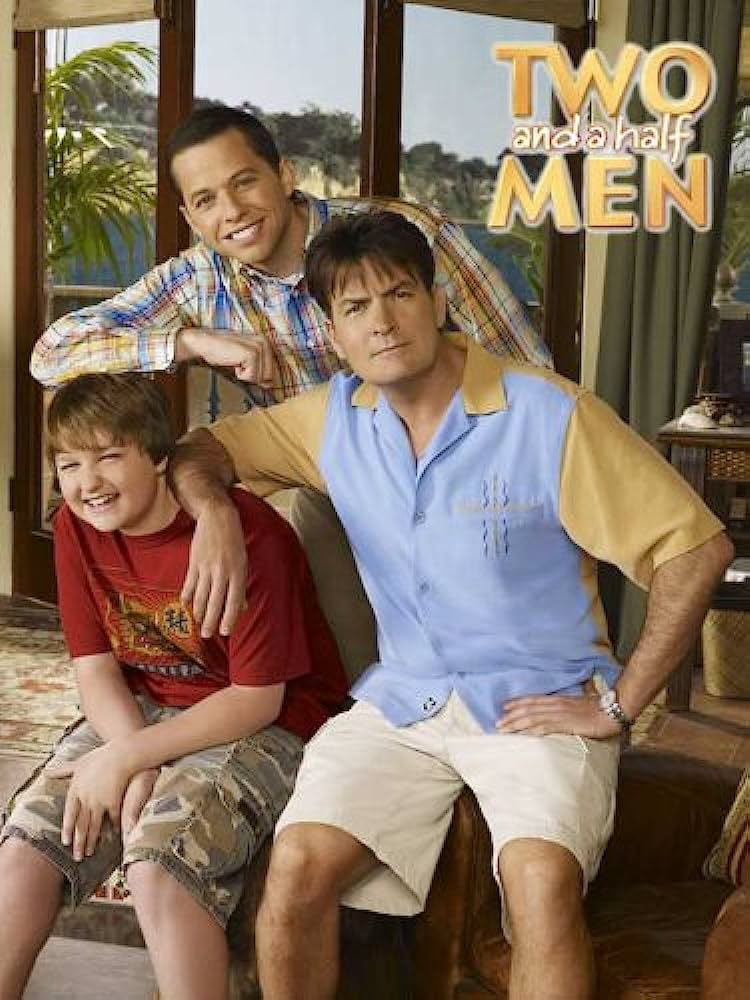

Two And A Half Men
Two and a Half Men is an American television sitcom that originally aired on CBS for twelve seasons from September 22, 2003, to February 19, 2015. Originally starring Charlie Sheen in the lead role alongside Jon Cryer and Angus T. Jones, the series was about a hedonistic jingle writer, Charlie Harper, his uptight brother, Alan, and Alan's mischievous son, Jake. As Alan's marriage falls apart and divorce appears imminent, he and Jake move into Charlie's beachfront Malibu house and complicate Charlie's freewheeling life.
In 2010, CBS and Warner Bros. Television reached a multiyear broadcasting agreement for the series, renewing it through at least the 2011–12 season.[1][2] In February 2011, however, CBS and Warner Bros. Television decided to end production for the rest of the eighth season after Sheen entered drug rehabilitation and made "disparaging" comments about the series' creator and executive producer Chuck Lorre.[3] Sheen's contract was terminated the following month and he was written out of the show after it was confirmed that he would not be returning to the series.[4] Ashton Kutcher was hired to replace him the following season as Walden Schmidt, a billionaire who buys Charlie's house after his death.